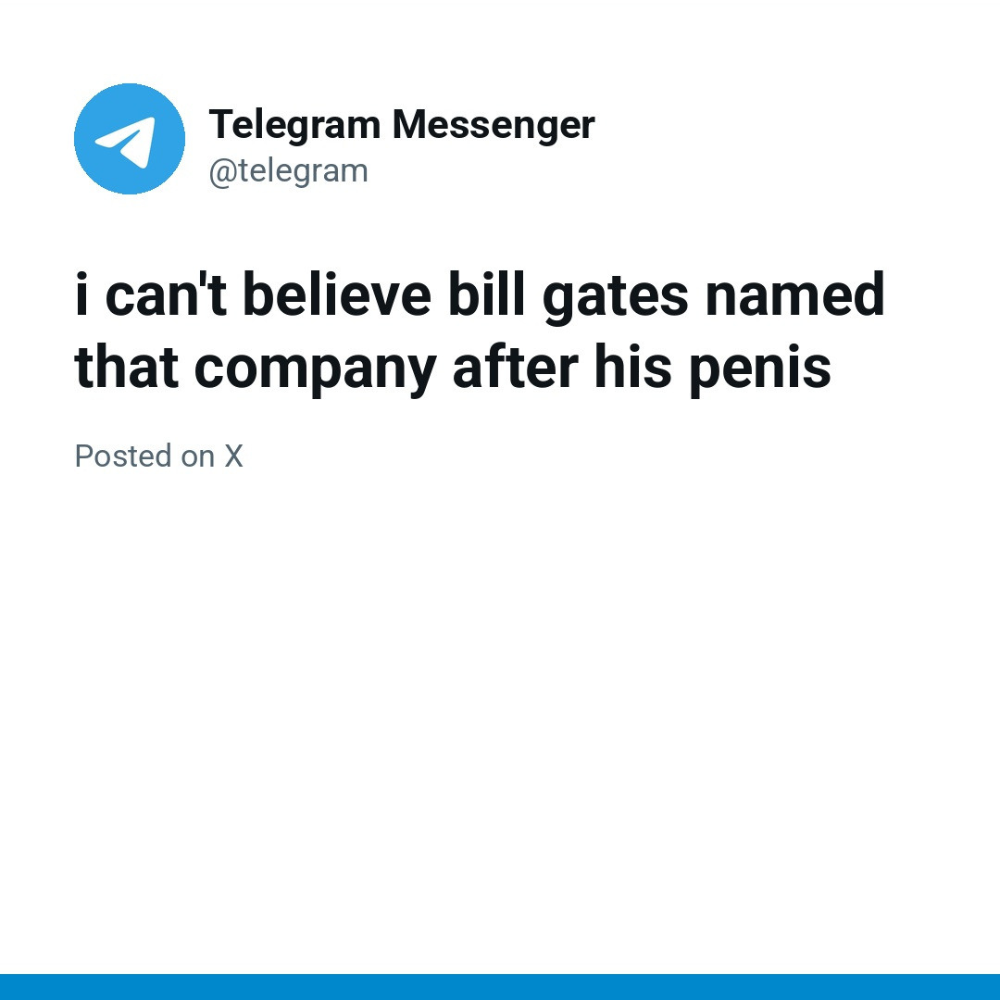

TOP 10 MEMES THIS WEEK
-

1. 'POV: Your First Time in a Fancy Cafe': AI-Generated Cafe Seating Mix-up
Per Know Your Meme, the original clip is an AI-generated video, not a filmed comedy sketch that was remade later.
Posted by @leehoustonx on TikTok. © its owner; shown in small form for ranking and commentary.
Sources & details
Seen on X, TikTok, Instagram, and Know Your Meme. First seen online .
X @Flovaai 335.1K views / 3,035 likes (observed 2026-11-09); TikTok @leehoustonx 11.9M views / 1.5M likes (observed 2026-11-09); Instagram @kevinwinnik 11M likes (observed 2026-11-09); Know Your Meme 2,881 page views (no separate observation time on file).
Know Your Meme explainerX / @Flovaai (335.1K views)X News (cafe mix-up)TikTok / @leehoustonx (11.9M views)Instagram / @kevinwinnik (11M likes)TikTok / @boby.biggsjohnson (6.6M views)
-

2. 'Frutiger Aero Yams': Brainrot Catchphrase Teasing Fans of the Glossy 2000s Aesthetic Gets a KYM Entry
A nonsense brainrot catchphrase that teases fans of Frutiger Aero, the glossy, bubbly, water-and-clouds design look of the late 2000s.
Posted by @seiyaposting on Instagram. © its owner; shown in small form for ranking and commentary.
Sources & details
Seen on X, TikTok, Instagram, YouTube, and Know Your Meme. First seen online .
X @LashSleeper 259.2K views / 27.2K likes (observed 2026-11-09); TikTok @hard_plushie 9.7M views / 2.4M likes (observed 2026-11-09); Instagram @thebigsolomando 80K likes (observed 2026-11-09); YouTube Lessons in Meme Culture 733.3K views (observed 2026-11-08); Know Your Meme 16,346 page views (no separate observation time on file).
Know Your Meme explainerTikTok / @hard_plushie (9.7M views)X / @LashSleeper (259.2K views)TikTok / @watosis (349K views)Instagram / @thebigsolomando (80K likes)YouTube / Lessons in Meme Culture (733.3K views)
-

3. H3's Ethan Klein Cheating Allegations Spawn a Meme Factory, Per KYM
A wave of reaction memes about H3 Podcast co-host Ethan Klein after his wife, Hila Klein, publicly accused him of having an affair.
Posted by @kleinhila on Instagram. © its owner; shown in small form for ranking and commentary.
Sources & details
Seen on X, TikTok, Instagram, YouTube, and Know Your Meme. First seen online .
X @PopBase 2.2M views / 43.1K likes (observed 2026-11-09); TikTok @gmcnews 595.4K views / 46.7K likes (observed 2026-11-09); Instagram @kleinhila 322K likes (observed 2026-11-09); YouTube Scroll Deep 358.8K views (observed 2026-11-04); Know Your Meme 20,945 page views (no separate observation time on file).
Know Your Meme explainerX / @PopBase (2.2M views)KYM: KleinificationTikTok / @gmcnews (595.4K views)Instagram / @kleinhila (322K likes)YouTube / Scroll Deep (358.8K views)
-

4. Anakin Skywalker Becomes the Face of Gen Z Male Rage
Star Wars prequel memes that cast Anakin Skywalker as a stand-in for frustrated young men.
Posted by @ArchitectOracle on X. © its owner; shown in small form for ranking and commentary.
Sources & details
Seen on X, TikTok, YouTube, and Know Your Meme. First seen online .
X 475K views; YouTube Akkad Daily 633.3K views (observed 2026-11-08); Know Your Meme 28,677 page views (no separate observation time on file).
Know Your Meme explainerX News (Malfoid and Anakin)YouTube / Akkad Daily (633.3K views)
-

5. Macaulay Culkin Goes as the 'Thousand-yard Stare' Meme for Halloween
The Thousand-Yard Stare is a blank, shell-shocked gaze that says "I have seen too much," used after anything exhausting, from finals week to a chaotic group…
Posted by @DiscussingFilm on X. © its owner; shown in small form for ranking and commentary.
Sources & details
Seen on X and Know Your Meme. First seen online .
X @DiscussingFilm 17.1M views / 351K likes (observed 2026-11-09); Know Your Meme 121,377 page views (no separate observation time on file).
-

6. 'Code Rot' / 'Yep It's Code Rotted Indeed': Glitch Filter Meme Spreads on TikTok
A TikTok scare-format around the 'Despicable Me 4 – Correct' filter game.
Posted by @tr0v0n on TikTok. © its owner; shown in small form for ranking and commentary.
Sources & details
Seen on TikTok, YouTube, and Know Your Meme. First seen online .
TikTok @tr0v0n 1.5M views / 105.1K likes (observed 2026-11-09); YouTube Lessons in Meme Culture 946.4K views (observed 2026-11-05); Know Your Meme 18,565 page views (no separate observation time on file).
Know Your Meme explainerTikTok / @tr0v0n (1.5M views)TikTok / @penutisthebestnickname (1.3M views)TikTok / @ted.broome1 (1.3M views)YouTube / Lessons in Meme Culture (946.4K views)
-

7. 'Woke 3': Midterm 'Blue Sweep' Spawns Satirical Sequel-slang Memes
Internet slang and a satirical sequel joke: after jokes about "Woke 1" (culture-war progressivism) and "Woke 2" (a more economically populist reboot), "Woke…
Posted by @MeganBitchell on X. © its owner; shown in small form for ranking and commentary.
Sources & details
Seen on X, TikTok, and Know Your Meme. First seen online .
X @MeganBitchell 3.5M views / 192.2K likes (observed 2026-11-09); TikTok @elionwillpower 859.6K views / 134.4K likes (observed 2026-11-09); Know Your Meme 8,622 page views (no separate observation time on file).
Know Your Meme explainerX / @MeganBitchell (3.5M views)X / @FabTheWoker (117K views)TikTok / @elionwillpower (859.6K views)TikTok / @travelingnurse (278K views)
-

8. Telegram's Official Account: 'I Can't Believe Bill Gates Named That Company After His Penis'
A crude one-liner from Telegram's official X account claiming Bill Gates named Microsoft after his anatomy.
Posted by @telegram on X. Shown as an attributed post card of that post, not a screenshot. © its owner; shown in small form for ranking and commentary.
Sources & details
-

9. Jiren Dances to 'I'm So in Love with You'
Animations of Dragon Ball characters, especially the stone-faced fighter Jiren, doing a smooth little dance to Mthu's song "it's like i'm not even here"…
Posted by @notmemetime on TikTok. © its owner; shown in small form for ranking and commentary.
Sources & details
Seen on TikTok, YouTube, and Know Your Meme. First seen online .
TikTok @notmemetime 4.2M views / 740.1K likes (observed 2026-11-09); YouTube Akenww 95.4K views (observed 2026-11-04); Know Your Meme 5,126 page views (no separate observation time on file).
Know Your Meme explainerTikTok / @notmemetime (4.2M views)YouTube / Akenww (95.4K views)
-
10. “I have this great idea for a drug called Regretamine. One dose and all your regrets are gone!”
"Regretamine" is a made-up drug from a joke post: one dose erases all your regrets, including the regret of taking it.
Posted by @elonmusk on X. © its owner; shown in small form for ranking and commentary.
Sources & details